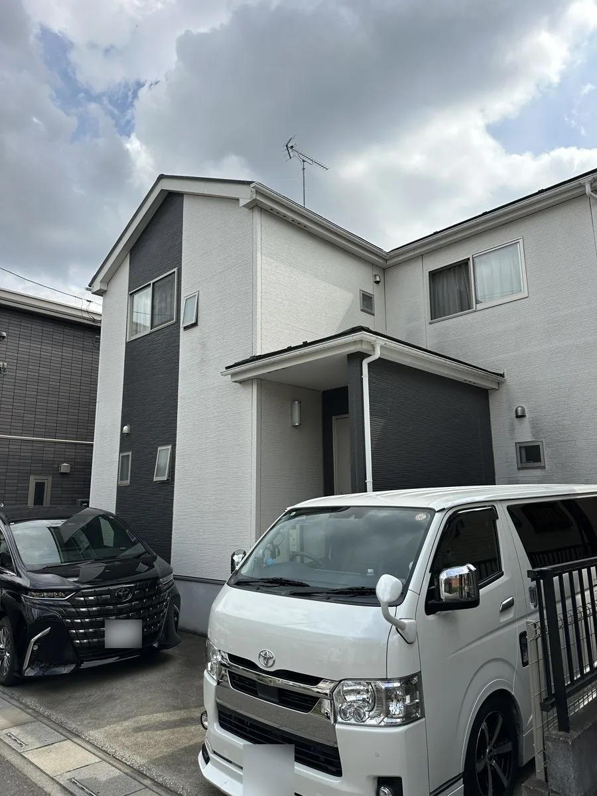

Real Makeは桶川市上日出谷南の職人直営店です。桶川市内の施工事例を、写真だけでなく使用塗料・費用・工期まで掲載しています。
代表の大川は17歳で塗装職人の道に入り、足場工としての経験も積みながら、24年以上にわたり建築業に携わってきました。
状態確認から施工後の相談まで、分かりやすい説明と丁寧な施工を大切にしています。



| 屋号 | Real Make（リアルメイク） |
|---|---|
| 代表者 | 大川 亮太 |
| 所在地 | 埼玉県桶川市上日出谷南2-1-19 |
| 電話 | 090-1434-0189 |
| 営業時間 | 8:00〜18:00 |
| 創業 | 2010年 |